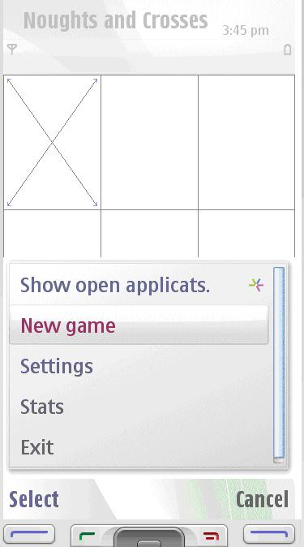
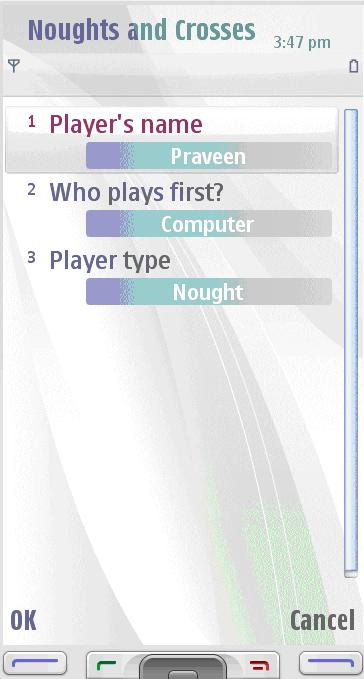
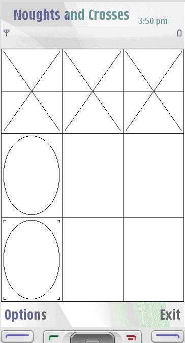
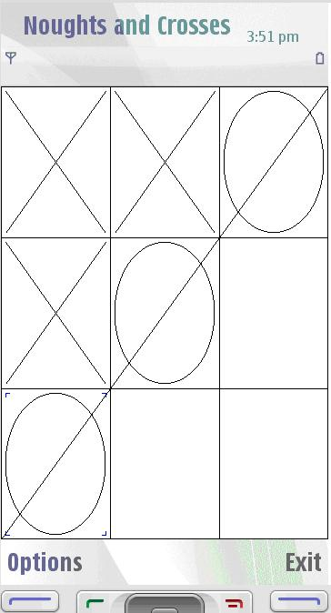
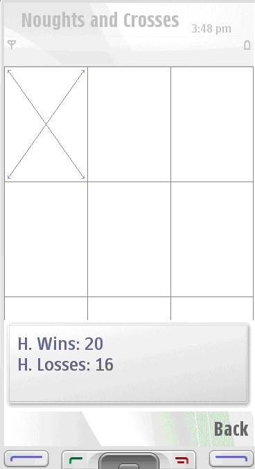

S60 5th Edition SDK v0.9
Example Applications Guide |
Naughts and Crosses Example
1. About this Example
2. Architecture
3. Prerequisites
4. Design and Implementation
5. Running the Example
Noughts and Crosses is one of the C++ example applications which support the scalable UI using either bitmaps or SVG-T icons.
The original purpose of this example is to demonstrate scalability and the usage of bitmaps and svg-t graphics in differet versions. This version supports svg-t.
NoughtsAndCrosses follows traditional MVC architecture.
This example exists as a complete application, and has the standard Symbian OS application architecture employing the Application, Document, UI, and View classes. The example makes use of several other Symbian OS concepts which the reader should be aware of before attempting to understand this example.
The application was designed with three main components:
- Application framework
- Model (games engine)
- Configuration/Statistical data
This design ensures that the UI and Engine are kept separate.
The following framework classes produce the skeleton application:
- CNoughtsAndCrossesApp — Operates as a startup object for the S60 application framework.
- CNoughtsAndCrossesDocument — Stores the application’s persistent state. Launches the AppUi and owns and constructs the Engine. It provides a thin-layered interface so the UI does not need to interact with the engine explicitly.
- CNoughtsAndCrossesAppUi — creates the views and handles application exit.
- CNoughtsAndCrossesView — Main application views. Handles menu commands and owns CNoughtsAndCrossesContainer.
- CNoughtsAndCrossesContainer — The board control, responsible for drawing of the game. This class is derived from CNoughtsAndCrossesEngine::Observer and registered with the model, so the model can notify the view if there are any changes.
- CNoughtsAndCrossesSettingsView — View for the user settings. Owns CNoughtsAndCrossesSettingListbox.
The model provides the functionality to play a game of Noughts and Crosses. It provides for the following:
- Allows the user to create a new game.
- Allows moves to be performed (human player and CPU player).
- Notifies the observer of any changes.
- Provides access to the board.
- Provides information on how the game is progressing.
This component of the application is responsible for accessing and updating the configuration and statistical data. The configuration information stored is used to determine which player starts the game (human or CPU), what symbol the human player will use (O or X), and the player’s name. The statistical information contains the number of times the human player wins and loses.
The MMP file for S60 5.0 is: nac_S60_5th_ed.mmp
To implement HandlePointerEvent function in the container (to provide Touch UI support for the CCoeControl derived control).
void CNoughtsAndCrossesContainer::HandlePointerEventL (const TPointerEvent& aPointerEvent)
{
// Check if touch is enabled or not
if ( !AknLayoutUtils::PenEnabled() )
{
return;
}
if (aPointerEvent.iType == TPointerEvent::EButton1Up)
{
CNoughtsAndCrossesDocument* document = static_cast<
CNoughtsAndCrossesDocument*> (iView.AppUi () ->Document ());
TRect boardRect = Rect ();
TInt verticalTileSize = boardRect.Size ().iWidth / BOARD_SIZE;
TInt horisontalTileSize = boardRect.Size ().iHeight / BOARD_SIZE;
ICursorRow = aPointerEvent.iPosition.iY / horisontalTileSize;
ICursorColumn = aPointerEvent.iPosition.iX / verticalTileSize;
if (!document->CanMove())
{
return;
}
if (document->MakeHumanMoveL(iCursorRow, iCursorColumn))
{
if (document->CanMove())
{
document->MakeComputerMove();
}
}
}
// Call base class HandlePointerEventL ()
CCoeControl::HandlePointerEventL (aPointerEvent);
}
Otherwise it derives its views from CAknView and CCoeControl classes. Also AknLayoutUtils (UI Metrics API) is used for scalability.
The original purpose of this example is to demonstrate scalability and the usage of bitmaps and svg-t graphics in different versions. This version supports svg-t.
When the application starts up and the user presses the Select softkey, the following screen appears:

Figure1: Start up view
Pressing the option Settings the below screen appears.
- Player’s Name: In this we can give the name of the player who is going to play.
- Who plays first: The player should select it whether it can be Human or computer.
- Player type: The player can select the type whether it can be nought or cross.

Figure2:Settings view
When the player fails to finish the game in a row ar column ar diagonal the below screen appears and the game is said to be draw.
Figure3:Draw view
When the player finishes the game with cross in a row the below screen appears and the player is won.

Figure4:Win view1
When the opposite player finishes the noughts in the diagonal view then that player is said to won the match and it is shown in the below screen:

Figure5:Win view2
For viewing the statics of the game played goto Options - > Stats, the below screen appears.

Figure5:Statistical Information
|
© Nokia 2008 |

|